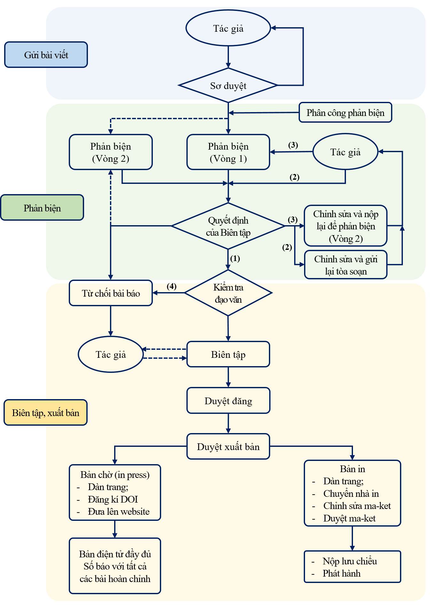

THỂ LỆ VIẾT VÀ GỬI BÀI
Tạp chí Khoa học Giáo dục Kỹ thuật thuộc trường Đại học Sư phạm Kỹ thuật TP.HCM nhận đăng các công trình khoa học mới có giá trị về mặt khoa học và thực tiễn trong nghiên cứu khoa học, chuyển giao công nghệ và lao động sản xuất, chưa công bố trong các ấn phẩm khác (kỷ yếu hội nghị hoặc tạp chí có phản biện và có chỉ số xuất bản ISSN, ISBN). Bài viết có thể trình bày bằng Tiếng Việt hoặc Tiếng Anh, khuyến khích viết bằng Tiếng Anh
Tạp chí xuất bản 02 tháng/kỳ và được phát hành rộng rãi trên toàn quốc, trong đó 02-3 số xuất bản Tiếng Anh.
YÊU CẦU CHUNG
Bài viết được hành văn rõ ràng, súc tích, cách dùng thuật ngữ khoa học và đơn vị đo lường hợp pháp do nhà nước ban hành hoặc đã dùng thống nhất trong chuyên môn hẹp. Bài viết được phân rõ phần mục, tiểu mục. Các công thức viết rõ theo ký hiệu thông dụng.
Mỗi bài viết dài không quá 8 trang trên khổ giấy A4 (210x297mm) gồm cả hình vẽ, bảng biểu, đồ thì và tài liệu tham khảo. Phông chữ: Times New Roman (Unicode), cỡ chữ: 12pt.
Bài báo chia làm 02 cột, mỗi cột rộng 7.75cm, độ rộng giữa hai cột 0.5cm theo định dạng bài báo mẫu trên website: http://tapchikhgdkt.hcmute.edu.vn/.
Căn lề: trên: 1.5cm; dưới: 1.5cm; trái: 2.5cm; phải: 2cm.
Tên bài báo, tóm tắt bài báo được trình bày bằng 2 ngôn ngữ tiếng Việt và tiếng Anh, nêu được nội dung chính, đóng góp mới của công trình. Phần tóm tắt (tiếng Anh – tiếng Việt) được viết ở đầu bài báo, ngay dưới tên tác giả, có độ dài khoảng 150-250 từ; liệt kê đủ từ 5 từ khóa, cách nhau bởi dấu (;)
Tài liệu tham khảo được đặt ở cuối bài và chỉ ghi những tài liệu được trích dẫn trong bài báo và được xếp theo trình tự trích dẫn trong bài và cần ghi theo thứ tự:
Nếu là tạp chí: Số thứ tự, tên tác giả, tên tạp chí, tập số, trang, (năm). Nếu là sách: Số thứ tự , tên tác giả, tên sách, trang, nhà xuất bản, lần và năm xuất bản. Nếu là luận án, luận văn: Tên tác giả; tên luận án, luận văn; cơ quan chủ quan và năm bảo vệ Nếu là kỷ yếu hội nghị, hội thảo: Tên tác giả; Tên bài báo; Đơn vị tổ chức; địa điểm; năm; trang. Các chữ nước ngoài khác hệ chữ La tinh thì phiên âm theo quy tắc thông dụng sang chữ La tinh.
Mỗi bài gửi đến tòa soạn gồm 01 bản in và 01 bản mềm (gửi kèm theo đĩa hoặc qua email). Tòa soạn chỉ nhận những bài được trình bày rõ ràng, hình vẽ đủ lớn và rõ.
Các công trình thuộc đề tài nghiên cứu có Cơ quan quản lý cần kèm theo giấy xác nhận cho phép công bố của cơ quan.
Để tiện liên hệ người viết cần ghi rõ: Họ tên, học hàm, học vị, chuyên ngành, điện thoại, fax, email, địa chỉ và chữ ký của tác giả vào cuối bài.
Thời hạn gửi bài, chậm nhất 06 tuần trước mỗi kỳ xuất bản.
Bài viết gửi về tòa soạn theo địa chỉ email: tapchikhgdkt@hcmute.edu.vn
CHÍNH SÁCH - QUY TRÌNH
Tất cả các quy trình (gửi bài, phản biện, biên tập, xuất bản) đều được thực hiện thông qua trang web trực tuyến của Tạp chí. Đối với mỗi giai đoạn, bài viết sẽ được xử lý trong một khoảng thời gian nhất định được quy định và cam kết bởi Tạp chí.
I. Quy trình nhận bài viết và sơ duyệt
Bài viết là một bài nghiên cứu hoàn chỉnh được thể hiện dưới dạng một bài viết khoa học nên bao gồm đầy đủ các thành phần của bài viết khoa học. Bài viết phải được nộp trên hệ thống trực tuyến của Tạp chí theo đúng lĩnh vực của bài viết. Bài viết phải tuân thủ đúng tôn chỉ, phạm vi và thể lệ, chính sách nộp bài mà Tạp chí đã công bố;
Tác giả cam kết bài viết không được gửi cùng lúc nhiều tạp chí và chưa từng được xuất bản tại các tạp chí, ấn phẩm khác.
Bài viết phải thông qua quá trình sơ duyệt và thỏa mãn các yêu cầu về các nội dung sơ duyệt (phù hợp với tôn chỉ, phạm vi, và thể lệ) để tiếp tục các bước tiếp theo.
Quy trình nhận bài viết được thực hiện qua các bước sau:
Bước 1:
Nhận bài viết từ Tác giả thông qua hệ thống nộp bài trực tuyến của Tạp chí.
Bước 2:
Thông tin về việc Tạp chí đã nhận bài viết bằng email trên hệ thống nộp bài trực tuyến của Tạp chí trực tuyến (Nội dung soạn sẵn và hệ thống trực tuyến tự động điền thông tin các trường thông tin để trống).
Bước 3:
Biên tập viên của Tạp chí sẽ thực hiện việc sơ duyệt bài viết đã nhận trên hệ thống OJS trong thời gian tối đa là 3 ngày. Quá trình sơ duyệt bao gồm các nội dung sau đây:
- Về sự phù hợp với tôn chỉ, mục đích, phạm vi của Tạp chí đã được công bố;
- Về sự tuân thủ các chính sách gửi bài, phản biện, biên tập mà Tạp chí đã được công bố;
- Về sự phù hợp với thể lệ của bài viết đã được công bố (file bản thảo (độ dài, font chữ); tiêu đề, tóm tắt, từ khóa bằng tiếng Anh và tiếng Việt; bảng, hình, số liệu;trích dẫn; hình thức & các lỗi chính tả);
- Về các thông tin cần cung cấp của Tác giả (họ tên, học hàm-học vị, nơi công tác, chức vụ, email và số điện thoại lạc), và các cam kết khác mà Tạp chí yêu cầu.
Kết quả sơ duyệt:
- Trường hợp 1: Đáp ứng đầy đủ tất cả các nội dung sơ duyệt được nêu ở phần trên, thư ký Toà soạn gửi email thông tin kết quả về việc nhận bài viết của tác giả. Thời điểm này được tính là thời gian nhận bài.
- Trường hợp 2: Nếu bài viết không đáp ứng về sự phù hợp một trong các nội dung nói trên hoặc không cung cấp đầy đủ thông tin của các Tác giả, và các cam kết khác mà Tạp chí yêu cầu, bài viết sẽ không được chấp thuận nhận bài.
- Bổ sung, điều chỉnh, nộp lại: Trong trường hợp không phù hợp về thể lệ hoặc thiếu các thông tin do Toà soạn yêu cầu cung cấp, cam kết thì sẽ được thư ký Toà soạn phản hồi với nội dung đề nghị Tác giả bổ sung, điều chỉnh, nộp lại. Chu kỳ sẽ được lặp lại cho đến khi bài viết được biên tập viên hoặc thư ký Toà soạn xác nhận với Tác giả bằng email thông qua hệ thống trực tuyến của Tạp chí. Thời gian này là thời gian nhân bài chính thức được.
- Từ chối: Nếu không phù hợp với tôn chỉ, mục đích hoặc với phạm vi của Tạp chí đã được công bố; hoặc đã lập lại quy trình mà bài viết vẫn không đáp ứng được các nội dung sơ duyệt; hoặc tác giả từ chối chỉnh sửa theo yêu cầu sơ duyệt của Toà soạn.
II. Quy trình phản biện bài viết
Sau khi bài viết đã qua sơ duyệt, bài viết bắt đầu qua công đoạn phản biện.
Bước 1:
Tạp chí khuyến khích các đề xuất từ phía tác giả về các chuyên gia phản biện phù hợp. Tổng biên tập phân công hoặc phân quyền cho biên tập viên chính/biên tập viên chuyên mục mời người phản biện trên cơ sở danh sách phản biện đã được Tổng biên tập phê duyệt. Thời gian phản hồi của biên tập viên và của người phản biện tối đa là 03 ngày.
Bước 2:
Tạp chí thực hiện chính sách phản biện kín hai chiều. Tác giả và người phản biện sẽ được ẩn danh. Các thông tin trao đổi giữa phản biện và tác giả phải thông qua trang web trực tuyến của Tạp chí. Các biên tập viên, thư ký tòa soạn sẽ theo dõi và kiểm soát quá trình này.
Giai đoạn phản biện được tính từ khi người phản biện chấp nhận lời mời thực hiện công tác phản biện từ Tòa soạn. Thời gian tối đa cho một người hoàn thành một lần phản biện một bài báo vòng một là 20 ngày, vòng hai là 07 ngày (trừ các các trường hợp đặc biệt).
Bước 3:
Sau khi có kết quả phản biện thứ nhất - vòng một. Dựa vào đề xuất của phản biện, biên tập viên được phân quyền, hoặc Tổng biên tập quyết định kết quả bài viết với bốn lựa chọn:
- Chấp nhận bài viết mà không cần chỉnh sửa;
- Cần chỉnh sửa và nộp lại;
- Cần chỉnh sửa và nộp để phản biện lại (vòng hai);
- Từ chối bài viết.
Một lần phản biện cho một bài viết có thể có một hoặc hai vòng phản biện dựa trên đề xuất của phản biện thứ nhất và do Tổng biên tập (hoặc phân quyền cho biên tập viên) quyết định.
Tác giả có thể theo dõi kết quả phản biện, được thể hiện trên mục trạng thái của bài viết. Đồng thời, Toà soạn sẽ gửi email về kết quả phản biện - quyết định của biên tập viên (một trong bốn lựa chọn) kèm theo các nội dung yêu cầu phải chỉnh sửa, (nếu là các lựa chọn (2), (3) và lý do từ chối nếu là lựa chọn (4)).
Bước 4:
Tác giả thực hiện việc chỉnh sửa, trao đổi với Tòa soạn:
- Chấp nhận bài viết mà không cần chỉnh sửa: tác giả không cần chỉnh sửa.
- Cần chỉnh sửa và nộp lại: tác giả phải thực hiện việc chỉnh sửa bài viết theo các nội dung yêu cầu trong thời gian quy định là 10 ngày. Các bản chỉnh sửa của bài viết phải kèm theo bản phản hồi/trao đổi từng điểm đối với tất cả các nhận xét của chuyên gia phản biện và Tòa soạn. Bài viết sẽ được xét duyệt bởi biên tập viên được phân quyền, hoặc Tổng biên tập để đảm bảo rằng các yêu cầu của chuyên gia phản biện và Tạp chí được đáp ứng đầy đủ.
- Cần chỉnh sửa và nộp để phản biện lại (vòng hai): tác giả phải thực hiện việc chỉnh sửa bài viết theo các nội dung yêu cầu trong thời gian quy định là 10 ngày. Các bản chỉnh sửa của bài viết phải kèm theo bản phản hồi/trao đổi từng điểm đối với tất cả các nhận xét của chuyên gia phản biện và Tòa soạn. Phản biện vòng hai được thực hiện tương tự như chu trình phản biện vòng một. Trong trường hợp bài viết được đánh giá bởi hai hoặc ba chuyên gia phản biện thì quy trình như phản biện thứ nhất.
- Từ chối bài viết.
Một bài báo có thể có từ một, hai, hoặc ba người phản biện. Thời gian phản biện của các phản biện là song song hoặc nối tiếp do Tổng biên tập hoặc biên tập viên phân quyền quyết định cho mỗi bài viết. Trong trường hợp bài viết nhận được nhiều sự đánh giá trái chiều, Tổng biên tập sẽ đưa ra quyết định để mời một chuyên gia phản biện thứ ba cho bài viết đó. Một bài báo có thể có một hoặc hai vòng phản biện do đề xuất của phản biện vòng 1 và do Tổng biên tập, hoặc phân quyền cho biên tập viên chính hay biên tập viên chuyên mục quyết định.
Tất cả các quyết định của Tổng biên tập hoặc biên tập viên về các kết quả phản biện đều được thể hiện trên thanh trạng thái của bài viết và email thông báo đến Tác giả
Sau khi bài viết đã hoàn thành công đoạn phản biện, thanh trạng thái bài viết sẽ thể hiện “chờ biên tập”: Bài viết tiếp tục bước vào công đoạn biên tập sau phản biện.
III. Quy trình biên tập bài viết
Để nâng cao chất lượng của các bài viết, sau khi quá trình phản biện kết thúc, bài viết đã tiếp tục các công đoạn của quy trình biên tập, bao gồm: biên tập sau phản biện và kiểm tra/soát lỗi.
Để quá trình biên tập được thuận lợi và nhanh chóng hơn, Tạp chí khuyến khích các tác giả tuân thủ đúng theo các Thể lệ bài viết và Mẫu bản thảo được công bố bởi Tạp chí.
Bước 1: Biên tập sau phản biện
Ở giai đoạn này, ngoài những yêu cầu hiệu chỉnh bài viết theo đúng thể lệ bài viết mà Tạp chí đã công bố, Tạp chí sẽ thực hiện kiểm tra tính tương đồng (đạo văn) của bài viết, đưa ra kết luận về bài viết trên cơ sở kết quả tính tương đồng và thông báo kết quả đến tác giả; hoặc đề nghị tác giả rà soát, chỉnh sửa để bảo đảm phù hợp tiêu chuẩn của tính tương đồng. Tác giả phải hợp tác với Biên tập viên để chỉnh sửa theo các yêu cầu của biên tập viên. Tác giả liên lạc sẽ đại diện nhóm tác giả trao đổi với Tòa soạn về các chỉnh sửa đã được thực hiện theo các yêu cầu của phản biện cũng như của Biên tập viên. Ngày gửi lại các hiệu chỉnh bài viết là ngày mà Tác giả hoàn thành việc chỉnh sửa theo tất cả yêu cầu của biên tập viên và nộp lại Toà soạn (thời gian chỉnh sửa là 10 ngày kể từ khi nhận được các nội dung chỉnh sửa từ biên tập viên).
Bước 2: Kiểm tra/ Soát lỗi (Biên tập trước duyệt đăng và xuất bản)
Tác giả cần rà soát bài viết, bảo đảm rằng bài viết đảm bảo đủ các điều kiện để duyệt đăng. Việc rà soát bản thảo cuối cùng được thực hiện trong thời gian tối đa 03 ngày (trừ một số trường hợp đặc biệt). Tác giả liên hệ đại diện nhóm tác giả chịu trách nhiệm về tính chính xác tất cả các nội dung trong bài viết cũng như thông tin các đồng tác giả.
IV. Quy trình Xuất bản bài viết
Sau khi hoàn thành bước biên tập trước công đoạn duyệt đăng và xuất bản, bài viết tiếp tục qua công đoạn duyệt đăng và xuất bản.
Khi các bài viết đều đủ điều kiện đăng trên Tạp chí Khoa học Đại học Mở Thành phố Hồ Chí Minh, các bài viết sẽ được tập hợp để duyệt đăng và lên kế hoạch dự kiến xuất bản (xuất bản trực tuyến, xuất bản bản in, số đăng, số thứ tự trong bài) trình Tổng biên tập phê duyệt xuất bản. Thời gian Tổng biên tập ký duyệt đăng chính là thời gian được ghi nhận trên mục thông tin bài viết. Các bài viết sẽ được duyệt để xuất bản bản điện tử (online) trên trang web của Tạp chí ngay sau khi được duyệt đăng. Nhiều bài viết được xuất bản trực tuyến trước ngày xuất bản bản in. Trong quá trình biên tập bài viết, Tạp chí sẽ thông báo đến tác giả liên hệ thông báo qua e-mail về ngày dự kiến xuất bản trực tuyến và bản in.
Lịch xuất bản của các chuyên ngành được công bố trên trang web trực tuyến của Tạp chí.
Tạp chí sẽ thực hiện công tác xuất bản. Các công việc dàn trang, xuất bản chờ trực tuyến (in press), xuất bản trực tuyến, chuyển file cho nhà in, kiểm tra bản ma-ket, xác nhận bản in, kiểm duyệt, nộp lưu chiểu, phát hành.
Sau khi bài viết được xuất bản bản in, mỗi tác giả sẽ nhận được một quyển tạp chí. Bạn đọc và các tác giả có thể đặt mua thêm Tạp chí thông qua trụ sở Tòa soạn hoặc trang web trực tuyến của Tạp chí.

CHÍNH SÁCH - QUY TRÌNH
Chính sách phản biện được công bố minh bạch bởi Tạp chí.
Tạp chí thực hiện chính sách phản biện kín hai chiều (double blind). Tác giả và chuyên gia phản biện sẽ được ẩn danh; mọi thông tin trao đổi sẽ phải thông qua Tòa soạn. Các chuyên gia phản biện cần xem xét các thông tin được cung cấp bởi Tạp chí trước khi chấp thuận phản biện bài viết cũng như gửi lại kết quả phản biện cho Tòa soạn.
Các bài viết vượt qua vòng sơ duyệt mới được gửi đi phản biện chính thức. Việc đánh giá bài viết và gửi lại kết quả phản biện đều được thực hiện thông qua hệ thống trang web trực tuyến của Tạp chí bằng cách nhấp vào liên kết được cung cấp trong email đề nghị phản biện bài viết.
Khi nhận được lời mời từ Tòa soạn, chuyên gia phản biện cần bảo đảm:
+ Bài viết đúng lĩnh vực chuyên môn, lĩnh vực mà chuyên gia phản biện đang nghiên cứu;
+ Các chính sách mà Tạp chí đã công bố;
+ Khả năng đáp ứng thời gian trả lời phản biện được yêu cầu (tối đa 20 ngày đối với Vòng một và 07 ngày đối với Vòng hai). Việc nhận lời mời phản biện từ Tòa soạn được hiểu là cam kết của phản biện để xem xét tiếp các chỉnh sửa ở Vòng hai (nếu có). Trong một số trường hợp đặc biệt, chuyên gia phản biện có thể gửi yêu cầu cho Tạp chí để kéo dài thời gian phản biện thêm (nếu cần). Ngoài ra, đối với một số bài viết bị quá hạn, Tạp chí kính nhờ chuyên gia phản biện hỗ trợ rút ngắn thời gian phản biện. Vì một lý do nào đó không thể rút ngắn hoặc không có phản hồi từ phía người phản biện, Tạp chí sẽ mời chuyên gia phản biện khác để bảo đảm thời gian phản biện đã công bố;
+ Các vấn đề về xung đột lợi ích cần được công bố: các xung đột lợi ích tài chính hoặc phi tài chính; và các yếu tố khác ảnh hưởng đến khả năng đánh giá khách quan bài viết của chuyên gia phản biện.
Tùy theo việc thỏa mãn bốn điều kiện nêu trên và các lý do cá nhân khác, chuyên gia lựa chọn việc chấp nhận hay từ chối lời mời phản biện từ Tòa soạn.
Chuyên gia phản biện sẽ cho ý kiến nhận xét, thẩm định nội dung khoa học và hình thức của bài viết một cách khách quan, trung thực, trên tinh thần tự nguyện, tự do học thuật, dựa theo Mẫu phiếu phản biện được cung cấp bởi Tòa soạn. Tất cả các góp ý, khuyến nghị của chuyên gia phản biện liên quan đến đánh giá khoa học đều được chuyển đến tác giả. Ngôn ngữ được dùng trong phiếu nhận xét nên mang tính chất góp ý để xây dựng bài viết được hoàn thiện hơn, tránh các ngôn từ xúc phạm hoặc nhận xét tiết lộ thông tin bí mật về các vấn đề khác.
Trên cơ sở đánh giá bản thảo bài viết, chuyên gia phản biện có ý kiến kết luận về việc chấp nhận, từ chối, hoặc yêu cầu tác giả chỉnh sửa, bổ sung bài viết.
- Nhận xét của chuyên gia phản biện sẽ đánh giá các nội dung chính sau:
- Tiêu đề
- Tóm tắt & từ khóa
- Giới thiệu
- Lý do nghiên cứu
- Cơ sở lý thuyết
- Phương pháp nghiên cứu và cơ sở dữ liệu
- Đóng góp về mặt khoa học và thực tiễn của bài viết
- Hình thức trình bày và lỗi chính tả/ngữ pháp
- Danh mục tài liệu tham khảo
- Đánh giá xếp hạng bài viết theo ý kiến cá nhân của chuyên gia phản biện (gồm 7 mức):
- A-Excellence (xuất sắc)
- B-Very good (rất tốt)
- C-Good (tốt)
- D-Acceptable (chấp nhận)
- E-Below average (dưới trung bình)
- F-Poor (tệ)
- Đề xuất của người phản biện: Sau khi đánh giá bài viết, người phản biện lựa chọn một trong các đề xuất sau để giúp Tạp chí đưa ra quyết định đối với bài viết:
- Chấp nhận bài viết mà không cần chỉnh sửa
- Chỉnh sửa và nộp lại Tòa soạn (chỉnh sửa nhỏ và không cần nộp lại để phản biện)
- Chỉnh sửa và nộp lại để phản biện (Các điểm cần sửa ảnh hưởng lớn đến nội dung của bài viết nên bản thảo sau khi sửa cần phải được gửi lại cho người phản biện để đánh giá lại)
- Từ chối bài viết (Cần giải thích rõ lý do trong báo cáo về những điểm yếu trong bài viết để tác giả có thể hiểu được cơ sở của quyết định này)
- Các đánh giá và đề xuất của chuyên gia phản biện cần tương thích với nhau:
- Mức đánh giá từ A-D: chấp nhận đăng (có hoặc không cần chỉnh sửa, hoặc chỉnh sửa và nộp lại để phản biện lần 2)
- Mức đánh giá E-F: Từ chối đăng
Sau khi nhận được kết quả nhận xét từ các chuyên gia, Tạp chí có thể yêu cầu chuyên gia phản biện cung cấp thêm các ý kiến, trao đổi khác về bài viết trong một số trường hợp sau:
+ Tạp chí nhận được các ý kiến trái chiều của các chuyên gia phản biện;
+ Phản hồi từ tác giả để bảo lưu quan điểm, hoặc giải thích thêm trong trường hợp chuyên gia phản biện chưa hiểu rõ hoàn toàn ngụ ý của nhóm tác giả.
Quyết định cuối cùng: Biên tập viên sẽ cân nhắc mọi quan điểm (tất cả các chuyên gia phản biện, biên tập viên và tác giả) để đưa ra các yêu cầu chỉnh sửa, bổ sung, trao đổi với tác giả nếu cần thiết. Tổng biên tập là người đưa ra quyết định cuối cùng chấp nhận hay từ chối xuất bản bài viết, quyết định này có thể không trùng khớp với khuyến nghị của một chuyên gia phản biện nào đó.
Chuyên gia phản biện có trách nhiệm bảo đảm tính bảo mật cho tất cả các tài liệu trong quá trình phản biện. Chuyên gia phản biện không được chia sẻ các đánh giá hoặc thông tin về bài viết với bất kỳ ai hoặc liên hệ trực tiếp với tác giả mà không có được sự đồng ý của Tổng biên tập.